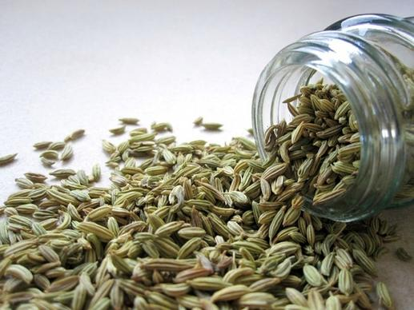
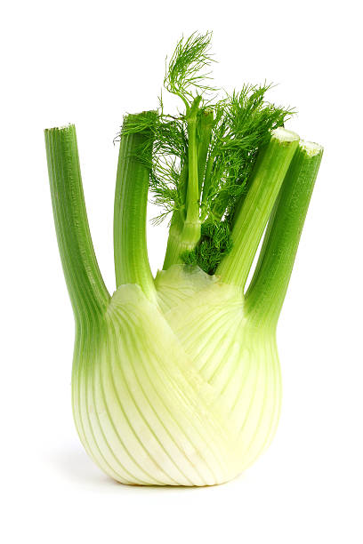
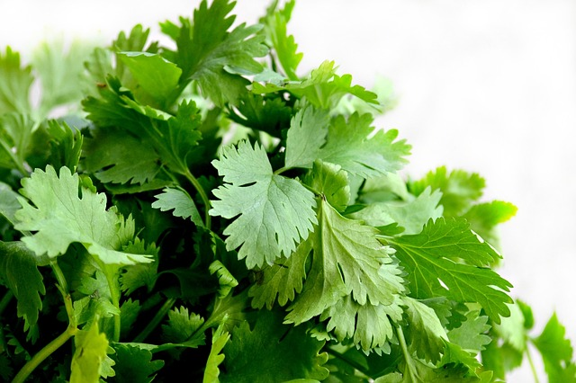
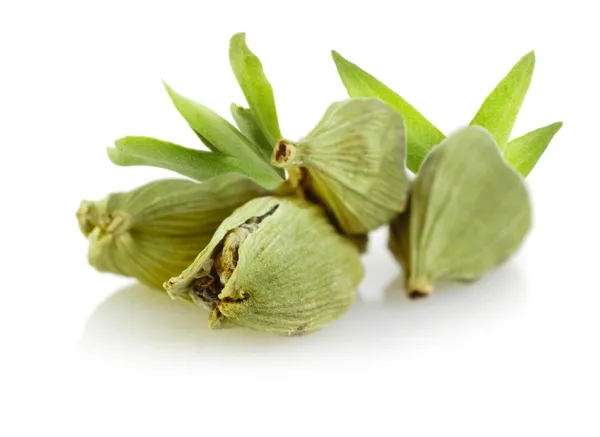

Ginger
Scientific Name: Zingiber officinale
Uses: Nausea, Digestion, Anti-inflammatory
Cumin
Scientific Name: Cuminum cyminum
Uses: Digestive Health, Flavouring, Antioxidant
Fennel
Scientific Name: Foeniculum vulgare
Uses: Fennel is used to relieve bloating, gas, and digestive discomfort

Turmeric
Scientific Name: Mentha piperita
Uses: anti-inflammatory, antioxidant properties
Triphala
Scientific Name: Terminalia chebula
Uses: Digestive Health,Detoxification
Coriander
Scientific Name: Coriandrum sativum
Uses: Detoxification, Culinary Uses
Cardamom
Scientific Name: Elettaria cardamomum
Uses: Aromatherapy and Perfume